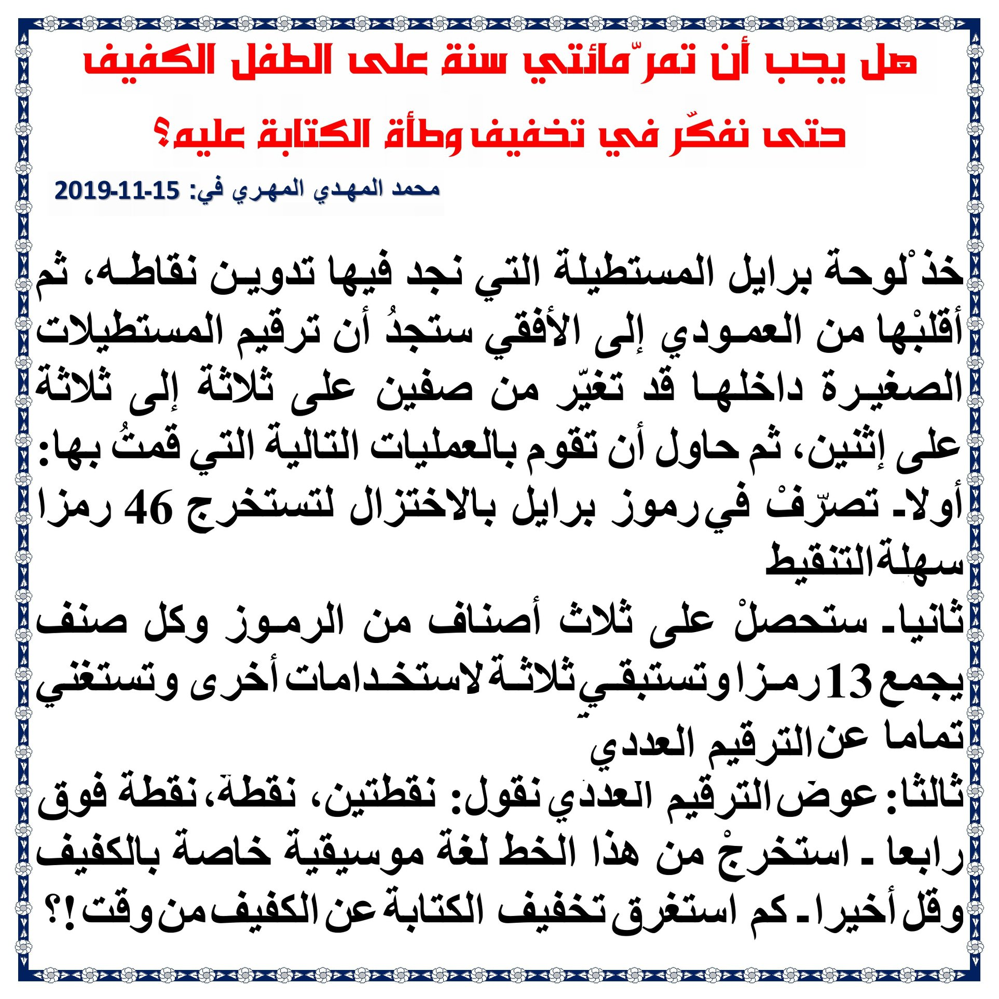
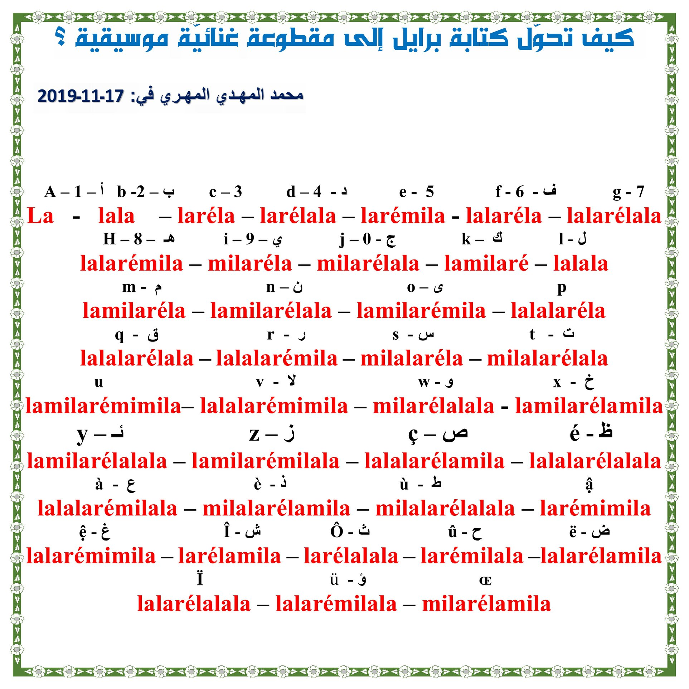
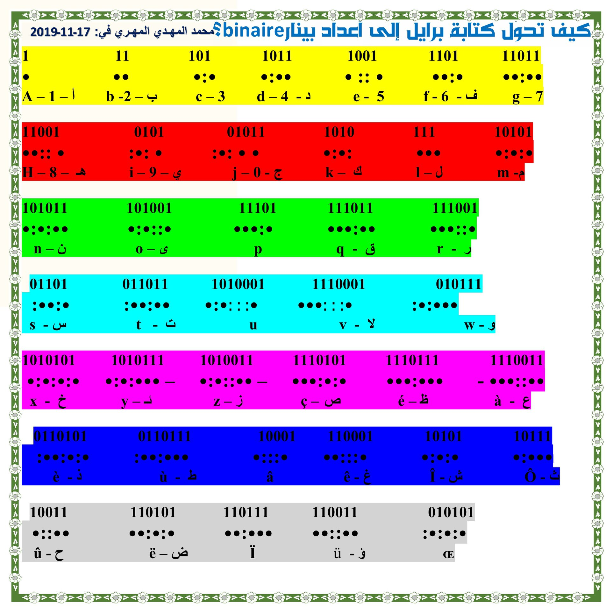
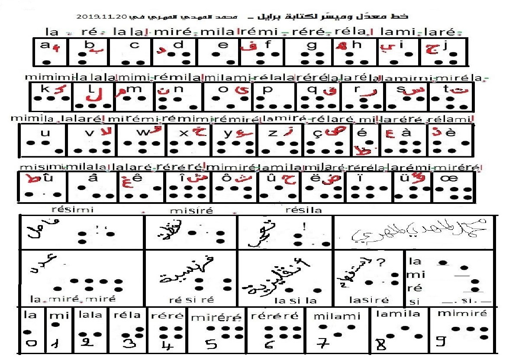

إنّ الحروف الهجائية بكتابة بريل فكرة عبقرية من رجل كـفيف أنار عقول الآلاف وفتح عالما من الثقافة والمعرفة العلمية كان حكرا على المبصرين ـ ولكن لم تخضع هذه الكتابة للتطوير ولم تحض بقدر كاف من الاهتمام بسبب الأنانية والغرور والانغماس في عالم تقوده دوافع المنفعة والجدوى وأن قاعدة التطوير المتبعة فيه هي العقلية العدوانية الحربية والتنافسية الغابية . تعتمد قراءة الحرف في هذه الكتابة على الأخذ بعين الاعتبار 6 نقاط وهمية في خطين عموديين متوازيين على جدول كل خط بـ 3 نقاط والشكل المرسوم بنقاط بارزة على هذه الوهمية هو الذي يُعطي معنى الحرف ولكن قراءته تقتضي تحديد مواضع النقاط المرسومة البارزة فوق النقاط الوهمية ــ فقراءة حرف (ب) تقرأ بتلمس نقطتين مرسومتين على الجهة اليمنى من الجدول فيقال للضرير المبتدئ في الكتابة (ب ـ 1،2 ) فيتصور بعقله مكان النقطتين من الستة نقاط الوهمية ، ويزداد الأمر تعقيدا بالنسبة لقراءة وكتابة حروف أخرى كـ (راء) مثلا (1،2،3،5) وحرف واو (2،4،5،6) ـ وهكذا بالنسبة لكل الحروف وهذا مرهق جدا بالنسبة للطفل الصغير خاصة وأن عليه أن يستحضر ترتيب النقاط وحفظ ذلك وليس تعقل شكلها المرسوم حيث لا يمكنه تعقل صورة الأشكال
إنّ تحويل كتابة بريل إلى مقطوعة غنائية موسيقية هو أمر ممكن وذلك باستبدال النقاط والفواصل والفراغات بحروف ـ هذه اللغة سيقع اختصارها كثيرا في الكتابة الميسرة والمعدلة التي أعددتها
هذه كتابة معدلة على كتابة بريل تمكّننا من الاستغناء تماما عن الأعداد لتحديد مواضع النقاط الفعلية من الستة مواضع الممكن التنقيط فيها ـ مثلا لتعيين نقاط حرف تاء نقول (2،3،4،5 ) أما 1 و6 فهما موضعان للتنقيط فارغين، وتُقرَأ الكتابة المعدّلة بالعرض عوضا عن الطول وتُعيّن الحروف بترتيب النقاط على السطر فنقول عن كتابة حاء مثلا : نقطة، نقطة فوق، نقطة ــ وعن كتابة ق : نقول : نقطتين، نقطتين، نقطة ـ وليس لنا إلا أن نعين هذه الثلاث إمكانيات (نقطة، نقطة فوق، نقطتين) وبالتالي نستغني عن الأرقام وعن اعتبار النقاط الفارغة ولا يأخذ الحرف من الحيز إلا ما يشغله ـ بالإضافة إلى أننا سنقلل من استعمال النقاط ونستغني عن اعتبار المواضع الفارغة في النقاط المخصصة للحروف ـ وهذه الكتاب تعطي إمكانية تحويلها إلى أصوات غنائية (فالنقطة laونقطة فوقmi ونقطتينré) ـ وبالإضافة إلى كل ذلك فإننا لن نكون بحاجة إلى أدوات جديدة فبخصوص التلميذ مثلا فما عليه إلا أن يقلب اللوح الذي يكتب عليه فيمسكه بالعرض بدلا من الطول ويستغني عن سطر بالنسبة للأسطر المخصصة للحرف ـ وربما يجد ضعيفو البصر (ضعفا بالغا) سهولة في تعلم هذه الكتابة باللمس ـ لأنها مسترسلة على خط واحد ولا تتجاوز الثلاث نقاط
  